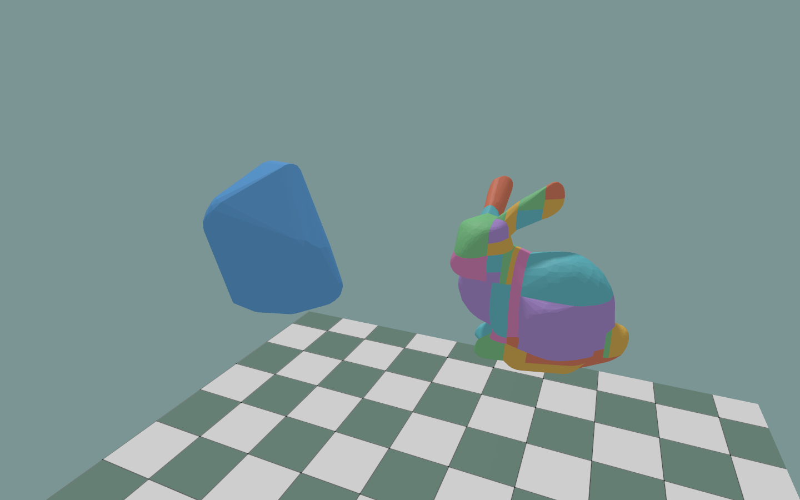
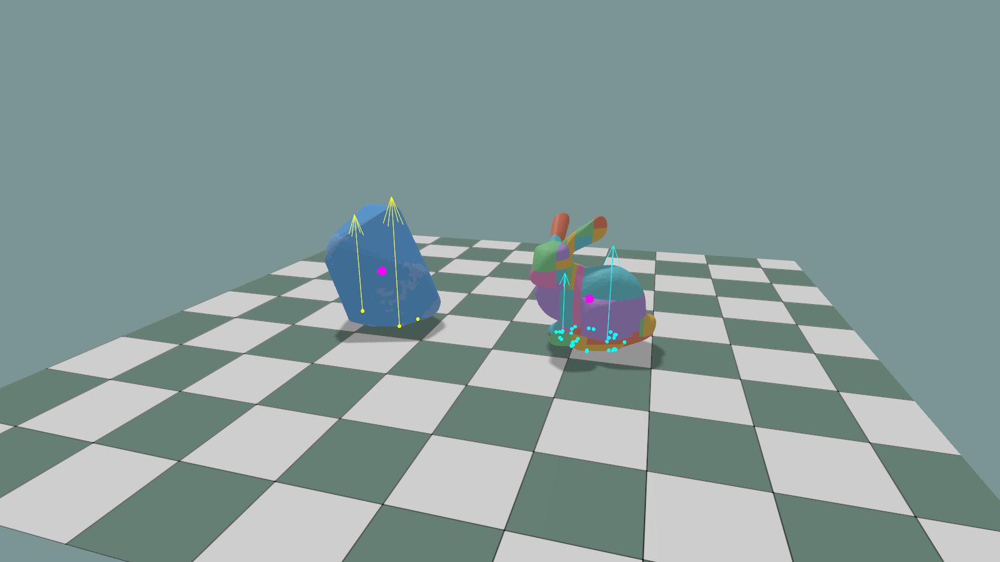
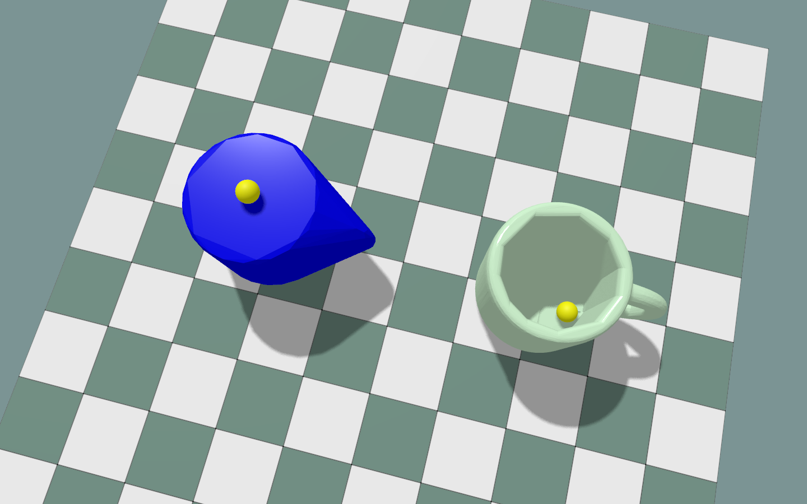

Convex Decomposition¶
Split a mesh into convex parts with CoACD and save them for reuse.
Setup¶
Install KangEngine, then run commands from the repository root:
python -m pip install numpy coacd
The tool lives in python/tools/, outside the installed KangEngine package.
Saved results need only NumPy. The viewer and MJCF exporter also need KangEngine.
Decompose the bunny¶
import numpy as np
import kangengine as ke
import convex_decomposition as decomposition
# Load the OBJ and extract positions and triangle indices.
mesh: ke.scene.MeshData = ke.asset.load_obj(path="assets/external/bunny.obj")
vertices = np.asarray(mesh.vertices, dtype=np.float32) # (N, 3)
faces = np.asarray(mesh.indices, dtype=np.int64).reshape(-1, 3) # (M, 3)
# Decompose once, then reuse the saved parts on later runs.
parts: list[decomposition.ConvexPartData]
parts, metadata = decomposition.decompose_mesh(
vertices=vertices,
faces=faces,
options={"threshold": 0.05, "seed": 0},
result_path="build/convex/bunny/coacd.npz",
)
# Prepare the parts for KangEngine's PhysX collider APIs.
collision_parts: list[ke.physics.ConvexMeshPart] = [
ke.physics.ConvexMeshPart(vertices=part.vertices, indices=part.faces)
for part in parts
]
print(f"parts={len(collision_parts)}, cache_hit={metadata['cache_hit']}")
Run:
PYTHONPATH=python/tools python decompose_bunny.py
Apply any mesh scale to vertices before decomposition. Parts keep the input
frame and units. Creating collision_parts prepares data; it does not start a
simulation.
Each part contains vertices and faces. metadata records the backend,
settings, part count, elapsed seconds, and cache_hit.
Existing result file: load it.
No result file: decompose and save.
rebuild=True: recompute.No
result_path: compute without saving.
Mesh or option changes do not invalidate saved files. Use a new filename or
rebuild=True after changes. Loaded metadata describes the saved run.
Compare collisions¶
Open the same bunny and reuse the result above:
python python/examples/compare_convex_collisions.py assets/external/bunny.obj \
--result build/convex/bunny/coacd.npz
The viewer prepares the parts first, then simulates a single convex collider (left) and a decomposed collider (right). Both drop onto the ground automatically.

Left: one PhysX hull. Right: 41 CoACD parts (threshold=0.05, seed=0).
Collider shapes before the drop, with source meshes hidden.¶

After the drop: contact points and force arrows are yellow for the single hull and cyan for the decomposed collider. Magenta dots mark the centers of mass. Sleeping bodies keep their last contact sample visible.
Use --rebuild after changing the mesh or settings. Without --result, the file
is build/convex/<input-stem>/<backend>.npz; use separate paths for inputs with
the same stem.
Control |
Action |
|---|---|
Shift + left-drag |
Apply force at the picked point in Force mode (the default). |
Enter |
Play / pause. |
Space |
Pause / step. |
R |
Reset. |
Show CoM |
Show centers of mass. |
Add an algorithm¶
You can use another decomposition algorithm with the same save/load workflow.
Write an adapter that follows
decomposition.ConvexDecompositionBackend. Give it aname, aversion, and adecompose(vertices, faces, options)method.In
decompose(), call your algorithm and return onedecomposition.ConvexPartData(vertices, faces)per convex part as a list. Keep the input coordinate frame and units.Register the adapter, then pass its name to
decompose_mesh():
decomposition.register_convex_decomposition_backend(backend=adapter)
parts, metadata = decomposition.decompose_mesh(
vertices=vertices,
faces=faces,
backend=adapter.name,
)
The adapter interface is experimental and may change.
Export a cup to MJCF¶
Decompose the cup OBJ and export it as one free rigid body:
python python/tools/mesh_to_mjcf.py assets/objects/cup/cup.obj \
--output-dir build/convex/cup/mjcf
This saves cup.xml, meshes/visual.obj, meshes/part_*.obj, and coacd.npz.
Use --rebuild after input changes, or --result path/to/result.npz to reuse a
decomposition saved elsewhere. Materials and textures are not exported.
Input coordinates use Y up and meters. Mass properties use a density of 1 kg/m³.
Add --mass 0.3 to set the total mass to 0.3 kg; inertia scales to match.
In cup.xml, the original mesh is visual-only. Each convex part becomes a
collision geom on the same body:
<mujoco model="cup">
<compiler angle="radian" meshdir="meshes" />
<option gravity="0 -9.81 0" />
<default>
<default class="collision">
<geom type="mesh" group="3" />
</default>
</default>
<asset>
<mesh name="visual" file="visual.obj" />
<mesh name="part_000" file="part_000.obj" />
<mesh name="part_001" file="part_001.obj" />
<!-- Remaining part meshes omitted. -->
</asset>
<worldbody>
<body name="cup">
<joint name="root" type="free" />
<geom name="visual" type="mesh" mesh="visual"
contype="0" conaffinity="0" group="1" density="0" rgba="0.8 0.8 0.8 1" />
<geom name="part_000" class="collision" mesh="part_000" />
<geom name="part_001" class="collision" mesh="part_001" />
<!-- Remaining collision geoms and computed inertial element omitted. -->
</body>
</worldbody>
</mujoco>

Left: PhysX convex hull. Right: CoACD result.¶